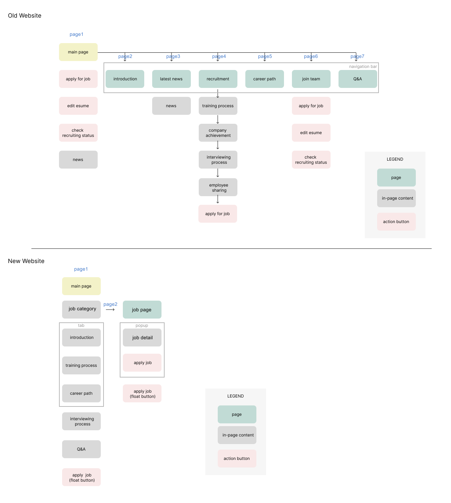
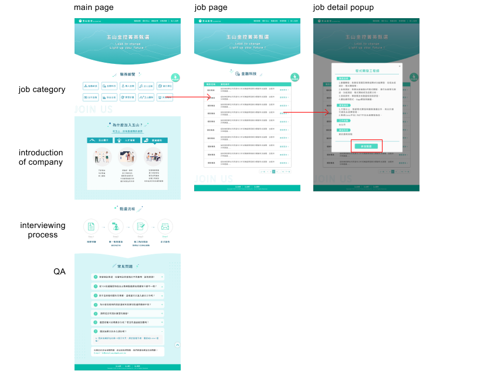

Overview
The purpose of the Official Recruitment Website Redesign Project is to create a visually
appealing and user-friendly website that effectively communicate the company's brand and
culture, and attract top talent to apply for job opportunities. The project focused on enhancing
the user experience and streamlining the application process, making it easy for candidates to
learn about the company, search for job openings, and submit their applications. The goal is to
increase the volume and quality of job applications, and ultimately, to find the best fit for
the company and its employees.
My Role
This project was designed and developed from Dec 2020 to Jan 2021. I worked on this project as a
Web Designer and Front-End Developor.
The Problem
The HR team reported high bounce rates and low job application rates on the company's old
recruitment website. Upon analyzing the report, I identified three key areas for improvement:
- The action buttons were not prominently displayed and the page contained an overwhelming
amount of information, making it difficult for users to navigate and proceed with the
application process.
- The website's structure was confusing and the user flow was unclear, adding to the
frustration of potential job applicants.
- The outdated design of the website did not align with the company's core value of embracing
digital transformation.

Competitor Analysis
I conducted competitive analysis to understand the best practices in candidate onboarding
processes. Through research of other job sites and recruitment websites of competing banks in
Taiwan, I discovered several key insights:
- It's essential for candidates to have a clear understanding of a company's core values and
hiring process.
- The onboarding process should be quick and straightforward.
Design solutions
- UX Design
I collaborated closely with the HR team to thoroughly analyze the existing job
application process and identify pain points for users. Through this analysis, I recommended
simplifying the hierarchy to only two levels and suggested that HR reserve important pieces
of information for job applicants. We then consolidated job category information, company
introduction, interview process, and Q&A into a unified, single page, which was designed to
be intuitive and streamlined. By redesigning the user flow and making it more
straightforward, we were able to reduce the number of steps required to apply for a job from
several steps to just three, which has resulted in a faster and more convenient process for
users.

- UI Design
The updated website will feature a modern and innovative UI design that
incorporates illustrations and motion to create a friendly, youthful, and vibrant
atmosphere. The use of illustrations and motion will enhance the user experience and make
the website feel engaging and interactive, encouraging users to explore the site and learn
more about the company and its job opportunities. To ensure ease of use, clear and prominent
action buttons have been added throughout the site, guiding users towards their desired
action.

Outcome
The Redesign Official Recruitment Website was lunched on Feb 2021. The project resulted in a 40%
increase in the number of candidates applying for job openings, as the new website design made
it easier for potential candidates to find job opportunities and apply for them. The outcome of
it is a high-performing, visually appealing, and user-friendly recruitment website that meets
the needs of both the company and its potential candidates.